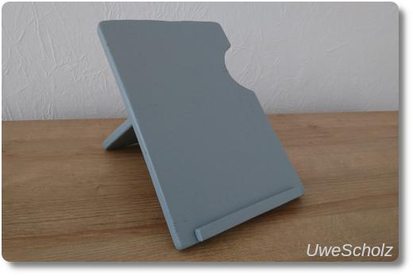
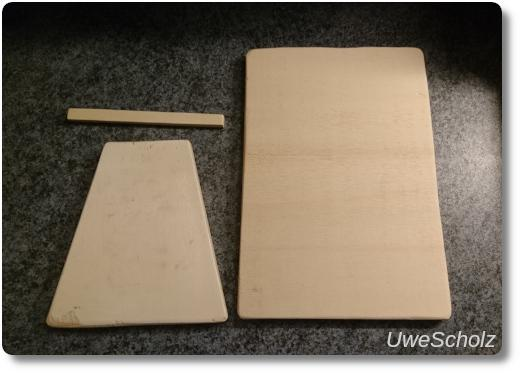
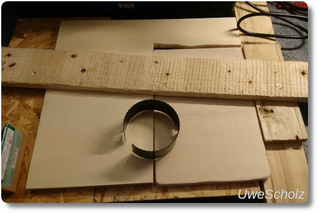
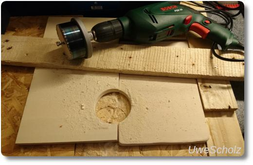
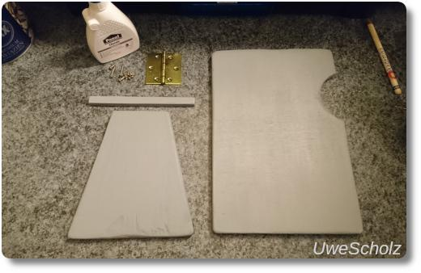
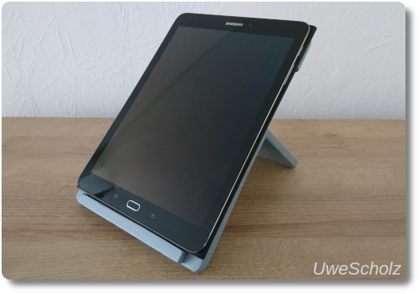

Tablet-Halter
Vor ein paar Tagen ist bei uns dieser Tablet-Halter aus einem Holzbrett entstanden. Ein schönes Projekt für ein verregnetes Wochenende. ^_^
Die Herstellung geht ganz einfach. Man benötigt nur ein dünnes Brett auf das man die Maße vom Tablet sowie für den Ständer und für das Haltestäbchen abzeichnet. Das alles habe ich dann zugeschnitten und die einzelnen Stücke mit einer Feile und Schleifpapier schön glatt geschliffen.
Außerdem habe ich auf der rechten Seite des großen Bretts eine Aussparung eingeschnitten. Damit kann man das Tablet bequem vom Halter abnehmen. (Anmerkung: Das funktioniert echt gut!) Das war der komplizierteste Schritt, weil ich dazu das Brett irgendwo einspannen musste, um ein Loch mit der Lochsäge aussägen zu können. Man sieht die Konstruktion dafür unten in den Bildern. Irgendwie hat es dann auch funktioniert..
Als Farbe haben wir uns für ein schönes mattes grau entschieden. Außerdem benötigt man noch ein Scharnier und ganz kurze Schrauben. Nach mehrmaligen Streichen und trocknen lassen wurde alles nochmal gut abgeschliffen. Das kleine Holzstäbchen zur Blockade unten habe ich mit zwei etwas längeren Schrauben fixiert (vorher kleine Löcher vorbohren, damit das Holz nicht aufplatzt!) und mit Holzleim zusätzlich geklebt, weil das Tablet ja schon etwas Gewicht hat. Fertig.
